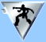

Badges
As you play, you will earn badges for various achievements. These are displayed for everyone to view. Game badges are earned during the course of a single game, and show on your Empire page for that game. Permanent badges last as long as you are an UltraCorps member, and display on your Profile.
By mousing over a badge, you can see what it was earned for. Clicking on a badge brings you to the appropriate section of these rules.
Most badges are ranked, with the lowest rank being red. With increasing levels of achievement, the badge becomes orange, then yellow, green, blue, violet, silver, and gold. Ranked badges also have bars on their sides . . . one for red, two for orange, and so on, up to eight for gold. This is to make them easy to interpret for those who have issues either with color vision or their monitors. Some badges have only a few ranks: these are copper-bronze-silver-gold.
Game Badges
These badges relate to a single game; they are earned during the game, and appear on your Empire page for that game. A game badge is never lost; once you qualify for a given badge, you'll keep it throughout the game. Thus, your badges record all your achievements, not just your current ranking.
It is possible to "game the system" and get some badges by working with other players. It's easy, for instance, to trade low-level Victory Badges with neighbors. Higher-level badges, on the other hand, require real work!
Victory Badges

A Victory Badge commemorates your victory over a specific race. It shows the icon of that race. You can win a separate Victory Badge for every race, including your own.
The Victory Badge is not leveled - it is red for a regular victory, and turns purple when you capture a homeworld from that race.
Conquest Badges
You earn this badge by capturing an enemy homeworld. It shows a Giganto Planet Attacker hovering over a planet.
The first time you capture a homeworld, you earn the red Conquest badge. Each additional homeworld captured, from any race, increases the badge level, up to gold for eight homeworlds.
A homeworld does not count unless you capture it from its original owner. You may only score a homeworld capture once per player, even if he names another homeworld and you capture that one too.
Empire Badges
This badge honors those Commanders who build large empires. It shows the "world" icon. When you control five worlds, you get the red badge. Each additional five worlds you control increases the badge level, up to the gold badge for 40 worlds.
Population Badges
This badge recognizes the achievement of building productive, high-population worlds. It shows the Population icon. The red badge is given for a world with 1,000, so Mah-Tog start with it. Orange - 2,000, yellow - 3,000, green - 4,000, blue - 5,000, violet - 7,500, silver - 10,000, gold - 15,000 population. Remember, that's for population on a single world, not total population.
Liberation Badge
This badge is given to a Commander who loses his original homeworld and recaptures it. The Liberation Badge is bronze, with a broken chain. This badge is not leveled.
Firepower Badge
The Firepower badge is granted for high Firepower on an individual world - that is, it recognizes the greatest accumulation of force that the player has ever had in one place as of the end of a tick, after battles. It shows a tank icon (the one for the A-7 Mauler). The red badge is given for a world with 25 FP; most players will get that on the first tick! Orange - 50 FP, yellow - 100, green - 250, blue - 500, violet - 750, silver - 1,000, gold - 2,000.
Firepower Destroyed Badge
The Firepower Destroyed badge is granted to the winner of a battle for firepower destroyed in a single battle. Destroyed FP will be calculated as though all units the player killed had been combined in a single fleet (even if they belong to more than one foe). Red - 25 FP, Orange - 50 FP, yellow - 75, green - 100, blue - 250, violet - 500, silver - 750, gold - 1,000.
Permanent Badges
These badges are earned for your overall UltraCorps performance, in and OUT of the game. Permanent badges appear on your Profile. Each game that you play has the potential to raise the rankings of your permanent badges.
Winner's Badge
This badge indicates the winner of a game. It is in gold for mega-games and silver for ring games, and shows a black star and one bar. A player who has won two or more games of the same type will have a second bar, and so on. If a player wins more than eight games . . . well, we'll cross that bridge when we come to it. To confirm a player's wins, look at his Profile. All games in which he won, or tied for victory, will be marked with a star.
Team Winner's Badge
This badge is for winners of a team mega game. We did our first team mega in June-July 2012; four races competed, with each race being its own team. The race with the most players ranked in the top 10 at the end of the game was declared the winner. All players of that race received the Team Winner's badge. As we run more games like this, players who win more team games will get additional bars on their Team Winner's badge.
Race Badges

Top Race badges are awarded in Mega and Ring games. The gold race badge is awarded to the top-placing player of that race. The silver top 5 race badges are awarded to players placing 2nd-5th in their race. The bronze top 10 race badges are awarded to players placing 6th-10th in their race.
12 in 8-7-6-5-4 Badges
These badges recognize a player who has beaten the standard unopposed solo game, with 12 unowned worlds to conquer, in eight turns or less, as follows:
- 12-in-8 badge (good time): copper, with the number 8 in a group of planets.
- 12-in-7 badge (very good time): bronze, with the number 7 in a group of planets.
- 12-in-6 badge (outstanding time): silver, with the number 6 in a group of planets.
- 12-in-5 badge (amazing time): gold, with the number 5 in a group of planets.
- 12-in-4 badge (mythical time): platinum, with the number 4 in a group of planets. Only a few Commanders have ever earned this badge, and the race setup they used is no longer available, so we will all be very impressed the next time it's won.
Alpha Badge
This badge is bronze, with the Greek letter alpha. It shows that the bearer finished at least one mega-game in the alpha test of the current (Perl) code.
Beta Badge
This badge is silver, with the Greek letter beta. It shows that the bearer finished at least one mega-game in the beta test of the current game code.
Brainstorm Badge
This badge recognizes significant and neat suggestions which have been incorporated into the game. It shows the traditional "idea!" lightbulb symbol. It is awarded at the discretion of the administrators in three levels - bronze, silver, and gold - and may be upgraded for multiple contributions.
Creative Badges
This badge is for players that participated in a creative contest. Gold is awarded for contest winners; silver and bronze are awarded at the discretion of the administrators for runners-up and honorable mention placings.
Bughunter Badges
This badge is awarded by the administrators to those players who report significant bugs. It shows the ferocious C.R. Org, the biggest bug in the game. This badge normally starts at red and goes up one level per bug, but the admins may award multiple levels at once for really good finds.
Service to the Acutron
This badge is gold, with the Acutron symbol. It is awarded by the administrators to players who do extraordinary things for the game community. It does not come in levels . . . it's a lifetime achievement award, granted once per lifetime. Mousing over this badge will show its "citation" - the reason it was awarded.
Special Badges
Special badges appear on your Profile page, but are not permanent . . . they last only as long as you qualify for them.
Administration Badge

This badge is black, with the Acutron symbol in gold. It designates a current member of the UltraCorps development or admin team.
List of Badge Winners
Images of the badges are shown on the Standings page. Clicking on each badge will take you to a list of the players who have won it.
Previous Topic: Scoring Points and Winning
Next Topic: Permanent Standings: Average, Master Points, and XP